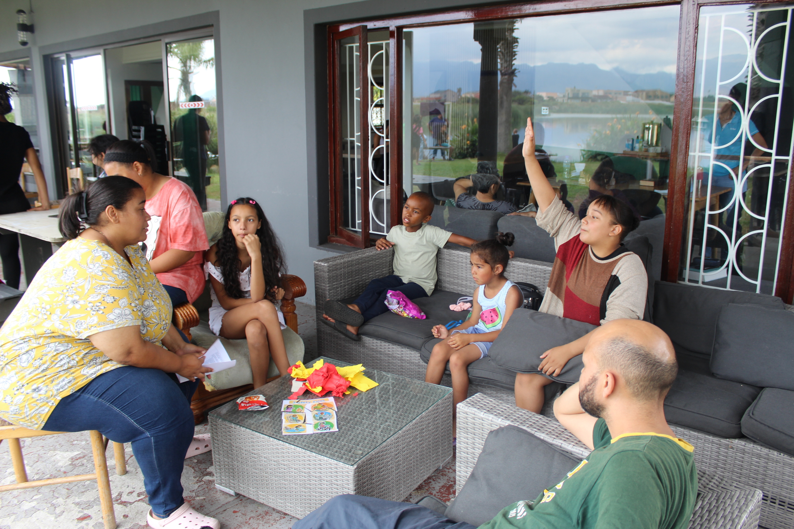
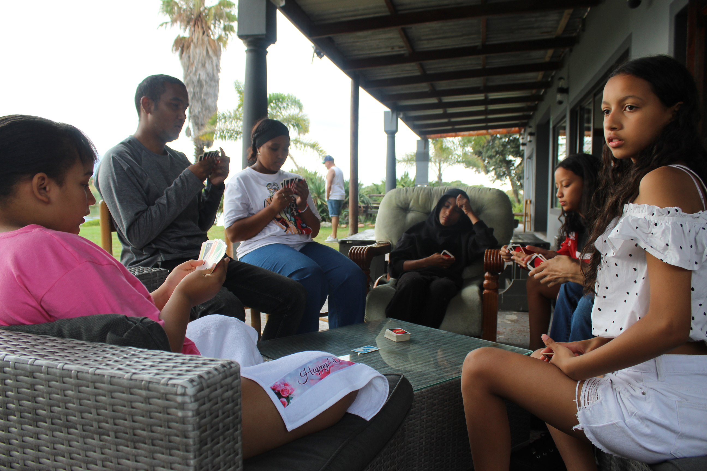

Our Sunday School ministry offers engaging biblical teaching for children and teens in a safe and welcoming environment. Lessons are grounded in Scripture and designed to support spiritual growth at each age level.
Families are encouraged to participate weekly and partner with teachers for ongoing discipleship.

Children Classes
Foundational Bible stories, memory verses, and Christ-centered learning.

Teen Discipleship
Interactive study sessions that encourage faith and practical application.